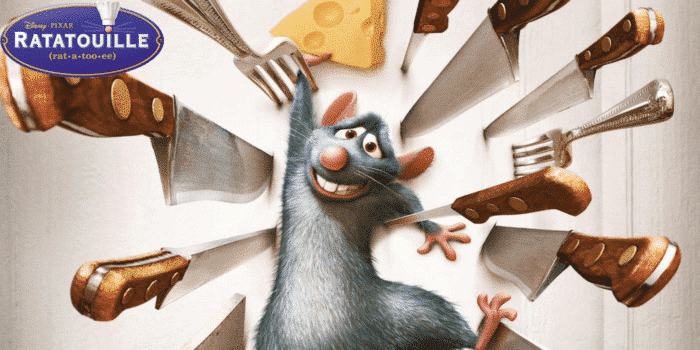

En deux mots, nous avons imaginé Ratatouille comme votre baguette magique au moment de poser La fameuse question « Qu’est-ce qu’on mange ce soir ? ».
Derrière une application super accessible se cachent des objectifs ambitieux !
Vous faire gagner du temps : avec Ratatouille plus besoin de chercher des recettes à droite à gauche, la plupart des plats sont disponibles dans une seule et même application.
Apprendre à cuisiner : expérimentez et cuisinez de nouvelles recettes qui vous feront sortir de votre routine habituelle. N’ayez plus peur de préparer de nouveaux plats !
Vous faire atteindre vos objectifs : renseignez vos données : sexe , âge , poids , taille et votre objectif , et laisser la puissance des algorithmes de prédiction du machine
learning vous proposez des repas adaptée à votre situation.
Limiter le gaspillage alimentaire : avec cette application, plus d’excuses pour jeter les produits que vous n’aurez pas utilisés dans votre frigo.
Ratatouille vous permet de tous les consommer avec des recettes originales !
Réaliser des économies : en gaspillant moins, vous ferez forcément des économies et aurez plus d’argent pour sortir avec vos amis !
